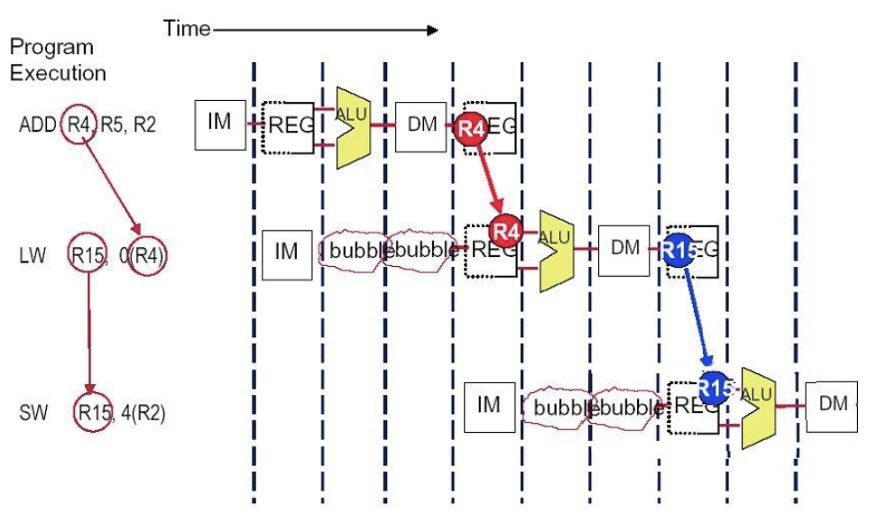
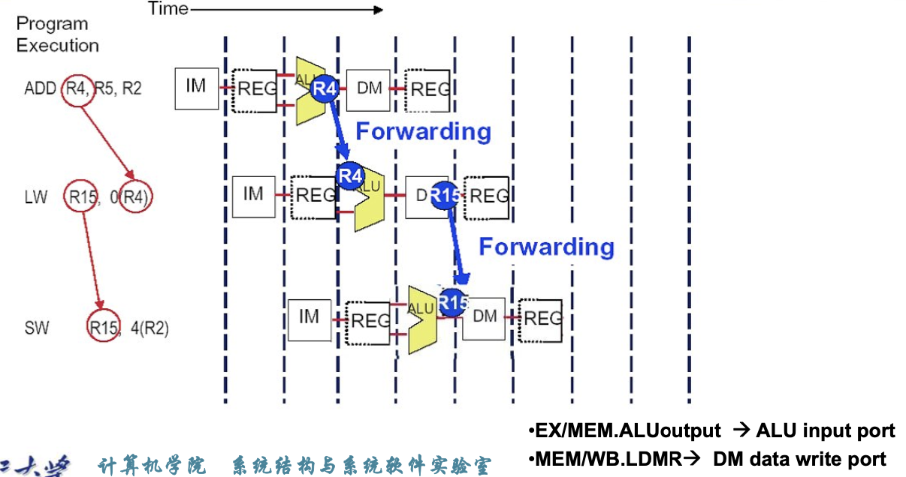

Chapter 4.Processor¶
约 1815 个字 -39 行代码 6 张图片 预计阅读时间 6 分钟
Pipeline¶
Five stages¶
- IF: Instruction fetch from memory(取指)
- ID: Instruction decode & register read(译码)
- EX: Execute operation or calculate address(执行)
- MEM: Access data memory operand(访存)
- WB: Write result back to register(写回)
Pipeline registers¶
- IF/ID(从取指到译码): 存储
指令,PC,分支预测信息 - ID/EX(从译码到执行): 存储
rs1,rs2,imm,wt_addr,控制信号,PC,PC + 4 - EX/MEM(从执行到访存): 存储
ALU_res,zero,写入内存的数据,wt_addr,控制信号,PC + imm,PC + 4 - MEM/WB(从访存到写回): 存储
内存中读取到数据,ALU_res,wt_addr,控制信号
Hazard¶
引入加速比的概念
- 从右到左到数据流会导致冒险
- 最简单的解决办法—
stall,在指令之间插入空指令,防止冒险. - 弊端:会降低效率
Structure Hazard¶
需要使用到的元件被占用了

如图,我的inst1需要用到内存,但此时内存正在被inst3使用,发生了结构冒险
Note
注意,有一类特殊情况,由于寄存器是可以随时读,但只能在上升沿写的.因此如果我某条指令在读寄存器,但另一条指令在写寄存器,这不属于结构冒险,程序可以正常执行.
Data Hazard¶
我现在要用的数据还没有传递过来,如:

这里第二条指令需要用到x19,但此时x19还没有写入寄存器,但它在EX时已经产生了,这就是数据冒险
解决方法
- 核心思想:不要等到数据自己存到寄存器,当数据产生时,我们可以直接把它前递到需要使用到地方,提高效率.
- 但是前递并不能百分百避免
stall,如果我们需要的数据还没产生,就只能插入空指令等到它产生.
如何探测我们需要前递?
- 判断寄存器编号: EX阶段使用到寄存器编号(rs)是否与MEM/WB阶段写回的寄存器编号(rd)相同
-
Data hazards when
-
Fwd from EX/MEM pipeline reg
EX/MEM.RegisterRd = ID/EX.RegisterRs1EX/MEM.RegisterRd = ID/EX.RegisterRs2
-
Fwd from MEM/WB pipeline reg
MEM/WB.RegisterRd = ID/EX.RegisterRs1MEM/WB.RegisterRd = ID/EX.RegisterRs2
-
-
只有我们需要改变寄存器的值的时候才会用前递,有些指令根本不可能写回寄存器,没有有效的rd
- 即:
EX/MEM.RegWrite,MEM/WB.RegWrite != 0 且 EX/MEM.RegisterRd,MEM/WB.RegisterRd存在
- 即:
Set Forwarding Signals
| Mux control | Source | Explanation |
|---|---|---|
| ForwardA = 00 | ID/EX | 第一个ALU源操作数来自寄存器 |
| ForwardA = 10 | EX/MEM | ALU源操作数是从前边的ALU_res前递来的 |
| ForwardA = 01 | MEM/WB | ALU源操作数是从前边的内存或更早的ALU前递来的 |
- If (
EX/MEM.RegWrite and (EX/MEM.RegisterRd != 0) and (EX/MEM.RegisterRd = ID/EX.RegisterRs1))- ForwardA = 10
- If (
EX/MEM.RegWrite and (EX/MEM.RegisterRd != 0) and (EX/MEM.RegisterRd = ID/EX.RegisterRs2))- ForwardB = 10
- If (
MEM/WB.RegWrite and (MEM/WB.RegisterRd != 0) and (MEM/WB.RegisterRd = ID/EX.RegisterRs1))- ForwardA = 01
- If (
MEM/WB.RegWrite and (MEM/WB.RegisterRd != 0) and (MEM/WB.RegisterRd = ID/EX.RegisterRs2))- ForwardB = 01
Note
考虑以下汇编代码
这里有两个数据冒险,我们重点关注后两条指令.第二条指令的EX阶段需要用到第一条指令写回的x1,第三条指令的EX阶段需要用到第二条指令写回的x1.
如果我们的Forwarding信号没有优先级的话,那么等到我第三条指令需要从前边得到x1时,我有可能取到的是当前MEM/WB阶段写回的x1,而不是EX/MEM阶段写回的x1.但是此时MEM/WB阶段写回的x1实际上是第一条指令的x1,而不是我们想要的第二条指令的x1.
因此我们需要添加一个条件:只有当EX/MEM的条件不成立时,才能查看,才能查看MEM/WB的条件
于是就有了下边的Forwarding信号
- If (
MEM/WB.RegWrite and (MEM/WB.RegisterRd != 0) and not (EX/MEM.RegWrite and (EX/MEM.RegisterRd != 0) and (EX/MEM.RegisterRd = ID/EX.RegisterRs1)) and (MEM/WB.RegisterRd = ID/EX.RegisterRs1))- ForwardA = 01
- If (
MEM/WB.RegWrite and (MEM/WB.RegisterRd != 0) and not (EX/MEM.RegWrite and (EX/MEM.RegisterRd != 0) and (EX/MEM.RegisterRd = ID/EX.RegisterRs1)) and (MEM/WB.RegisterRd = ID/EX.RegisterRs2))- ForwardB = 01
Load-Use Data Hazards¶
如果我们的load指令在EX/MEM时停止,此时ld后边有两条指令需要暂停,但其实我们可以更早发现这个问题
ID/EX.MemRead and ((ID/EX.RegisterRd = IF/ID.RegisterRs1) or (ID/EX.RegisterRd = IF/ID.RegisterRs2))
如果探测到了,就stall and insert nop
如果发生了load-use冒险,load的下一条指令在load 的EX阶段,即load的下一条指令的ID阶段检测到了冒险,那么我们需要做如下三件事(相当于把load后边的两条指令都阻塞了一个时钟周期):
- 把
ID/EX阶段控制信号清零,而不是把译码得到的控制信号给EX - 保持
IF/ID阶段寄存器值不变,而不送入当时取出的指令 - 保持PC值不变,这样阻塞一个时钟周期后load的下下一条指令可以正常取指
然后再通过forwarding,把load指令在MEM阶段得到的数据传递给阻塞后的下一条指令的EX阶段
How to Stall the Pipeline¶
- 强制把ID/EX寄存器中的控制信号变为0
- EX,MEM and WB do
nop
考虑如下汇编代码:
不用forwarding的解决方式:

我们在lw和sw指令的IM和REG之间插入了两个bubble.
用forwarding的解决方式:

Control Hazard¶
Note
如果我有一条B型指令,需要跳转,但是此时的PC并不是我B型指令当前的PC,因此我的跳转地址不是正确的地址.
Simple solutions¶
- Stall
- Prediction
- Predict-untaken: treat every branch an not taken
-
Predict-taken: treat every branch as taken
-
Reducing Branch Delay
- Dynamic Branch Prediction
Branch Hazards¶
是否跳转在MEM阶段决定
最简单的解决方式:无视这种情况,因为前三个阶段并不涉及对寄存器和内存的修改,即使我们预测后续不执行这些指令也不会带来影响,但这样可能导致CPI显著降低
Example
一段汇编代码有30%的branch指令,理论CPI是1,如果插入stall,性能如何?
CPI = 1 + 30% * 3 = 1.9 >> 1
显著降低了性能
另一种方法是在ID阶段决定是否跳转,因为此时我们已经有了两个源操作数和立即数

Dynamic Branch Prediction¶
In deeper and superscalar pipelines,branch penalty is more significant
Use dynamic prediction
- Branch prediction buffer (aka branch history table)
-
记录前几次是否命中
-
Indexed by recent branch instruction addresses
- Stores outcome (taken/not taken)
- To execute a branch
- Check table,expect the same outcome
- Start fetching from fall-through or target
- If wrong,flush pipeline and flip prediction
1-bit prdictor¶
Branch History Table¶
CPU在拿到一条指令并确定其是分支跳转指令后,就去BHS中找该指令的跳转历史,并通过其跳转历史来预测未来是否跳转.
这里我们记录的是PC的低位,但是如果相同低位而高位不同时,就会出现问题.
Example
考虑以下分支历史:
TNTNTNTNTNTNTN...,使用1-bit predictor但结果就是,除了第一次我们可能预测正确外,其它时候都会预测错误,准确率为0.这显然是不可接受的,由此引入2-bit predictor
2-bit predictor¶
只有在连续错两次时才会修改我们的预测
Calculating the Branch Target¶
即使我们预测出了是否要跳转,我们仍然需要一个时钟的bubble来计算目标地址
Note
- Branch Target Buffer
- Cache of target addresses
- Indexed by PC when instruction fetched
- If hit and instruction is branch predicted taken,can fetch target immediately
DataPath¶

Exception and Interrupt¶
- Exception:异常
- 在CPU内部引起
- Interrupt:中断
- 由外部输入或硬件引起
Handling Exceptions¶
- Save PC of offending (or interrupted) instruction
- In RISC-V:Supervisor Exception Program Counter(SEPC)
- Save Indication of the problem
- In RISC-V:Supervisor Exception Cause Register(SCAUSE)
- Jump to handler
- 必须由硬件跳到这个地址
- Direct:所有异常跳到固定地址
- Vectored Interrupts:中断向量
- 由异常的种类决定我们跳到哪个地方,异常,外部中断,非法指令跳到不同的程序
如果我同时有多个异常/中断,如何处理?
Handler Actions-中断服务程序¶
- Read cause,and transfer to relevant handler
- Determine action required
- If restartable
- Take corrective action
- use SEPC to return to program
- Otherwise
- Terminate program
- Report error using SEPC,SCAUSE...